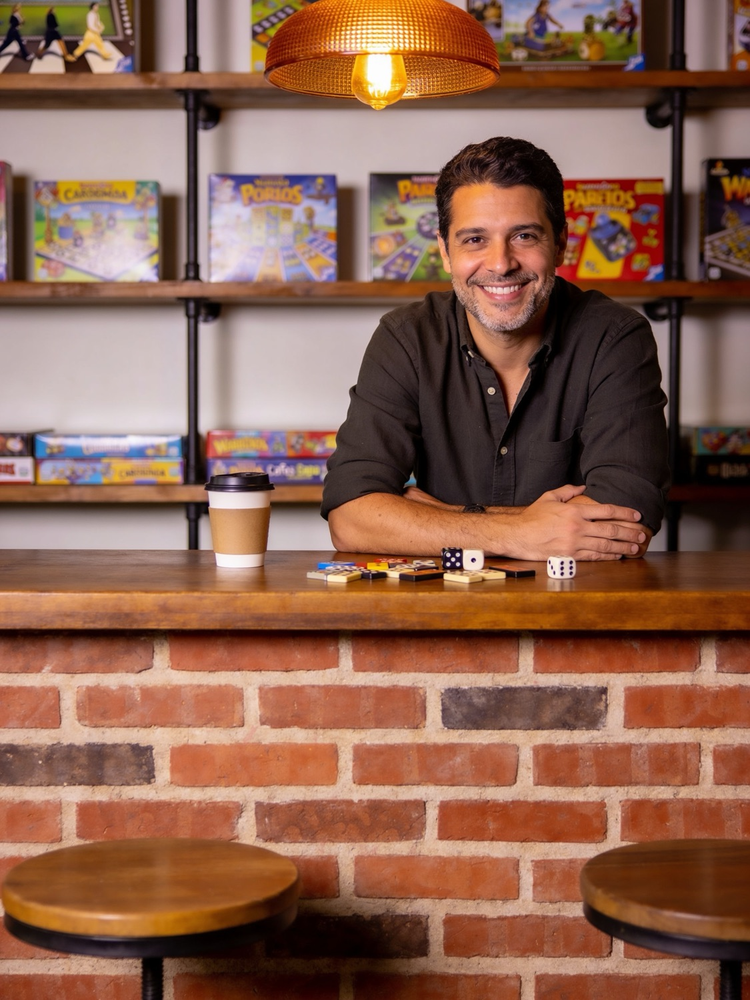
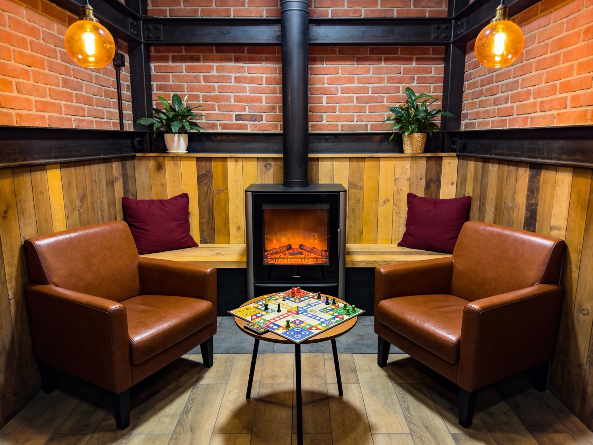
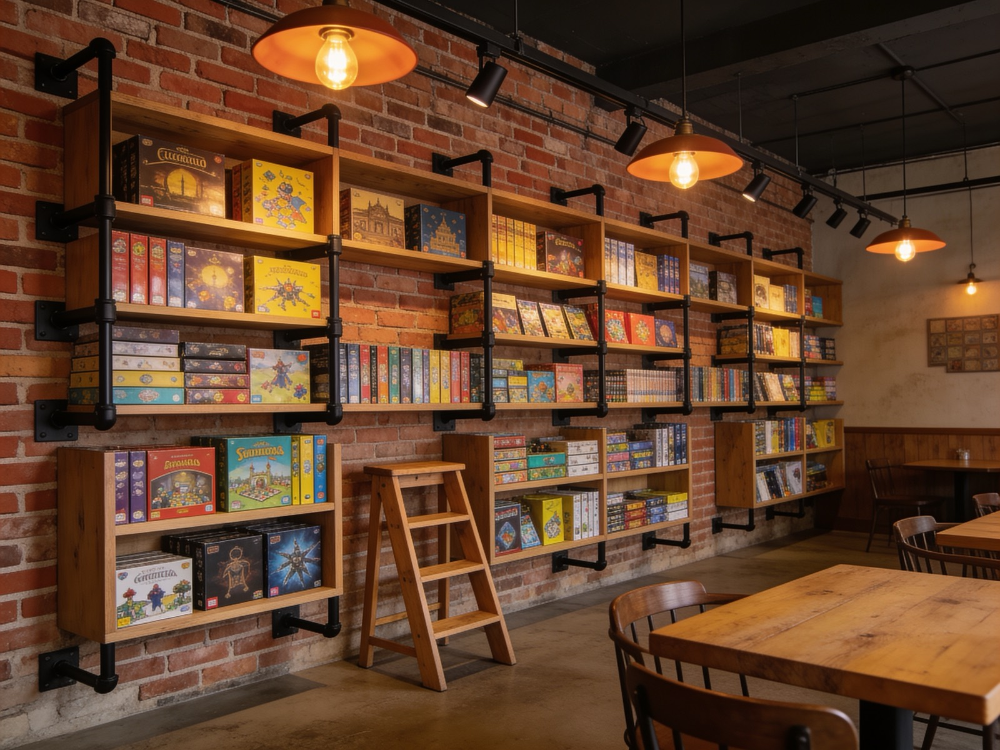
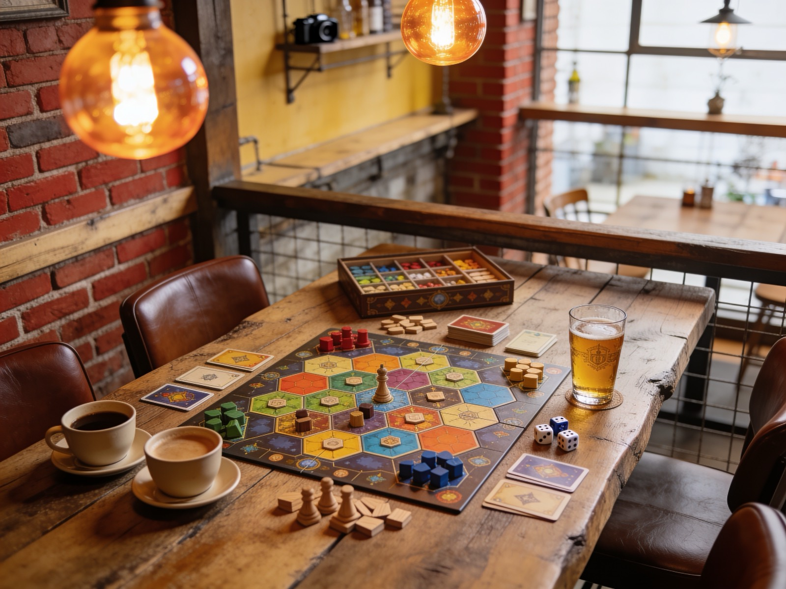
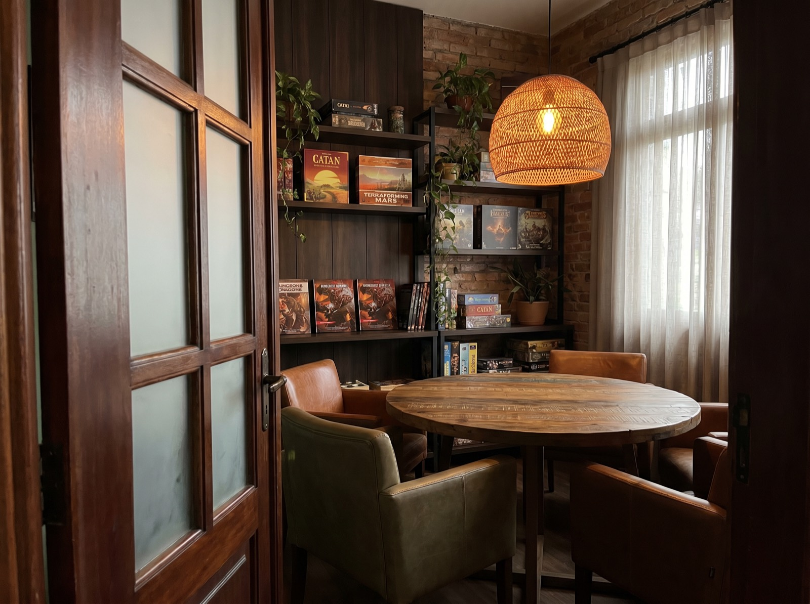
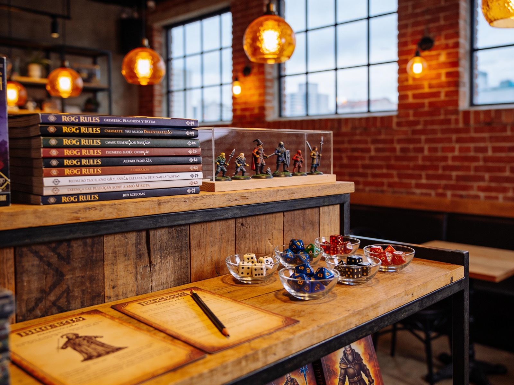
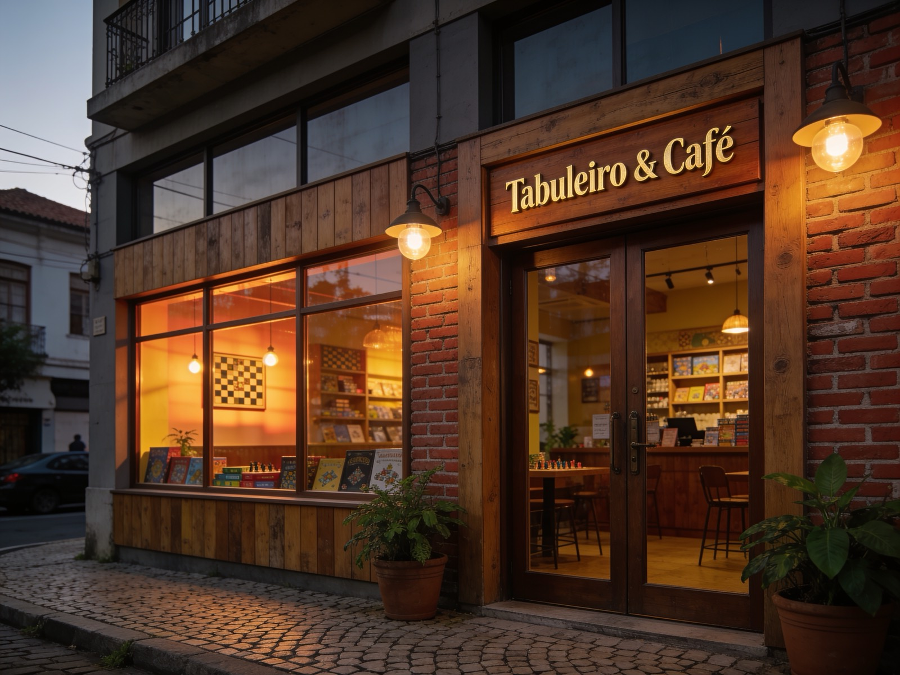

Locadora & Ludoteca · Batel, Curitiba
Mais de 500 jogos de tabuleiro pra alugar, jogar no espaço ou levar pra casa. Um café no Batel onde a mesa tá sempre livre.
Como funciona
Não tem certo ou errado. Tem o que funciona pra você hoje.
Escolhe o jogo, paga a diária e leva pra casa. Devolução em 72 horas, sem mensalidade nem fidelidade.
Trocas ilimitadas por uma mensalidade. Pega um jogo, joga no seu tempo, devolve e pega outro. Por 14 dias sem pressa.
Mesas livres de terça a domingo. Senta, pede uma cerveja, escolhe um jogo da estante e joga aqui mesmo. Sem custo além do consumo.
Em destaque
Os favoritos da casa, escolhidos a dedo pelo Marcelo e pela turma que frequenta.

O fundador
Curitibano de nascença, tabuleiro por opção. Abriu o Grifo Dourado em 2022 num sobrado do Batel porque não encontrou o lugar que queria frequentar.
Depois de anos jogando em mesas improvisadas — mesa de cozinha, mesa de bar, chão de sala — percebeu que faltava um lugar com bom acervo, boa cerveja e gente pra jogar. Então montou um.
"Eu queria um lugar onde pudesse sentar, jogar, pedir uma cerveja e não precisar ir embora. Como não existia, abri um."

A mesa tá livre. A cerveja, gelada. O próximo jogo é seu.
O espaço
Dois andares, estantes cheias e uma lareira pra quando Curitiba decide esfriar.





Prova social
"Fui num sábado pra conhecer e saí com três jogos alugados e uma turma nova de amigos. O Marcelo entende tudo, recomenda na lata."
"O melhor é que não precisa comprar jogo caro e encostar no armário. Pego, jogo, devolvo. A lareira no inverno é um diferencial absurdo."
"Levo meu grupo de RPG pra sala privada toda quinzena. Cerveja gelada, mesa boa, silêncio. Achamos nosso cantinho."
Onde fica
Mapa: Rua Mateus Leme, 482 — Batel, Curitiba